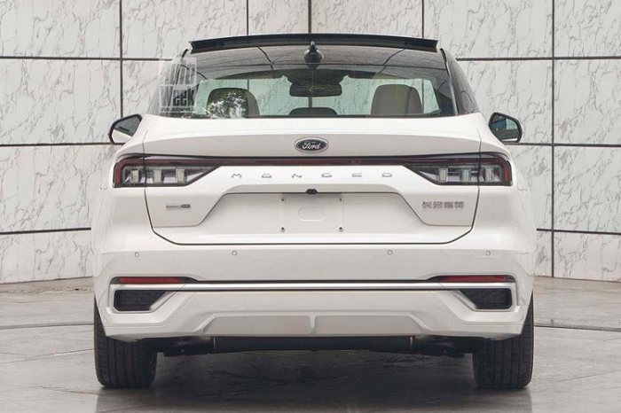

Mẫu xe sedan cỡ lớn Ford Mondeo 2022 mới dành riêng cho thị trường Trung Quốc đã chính thức trình làng với diện mạo đột phá, trang bị ấn tượng dẫn đầu phân khúc. Trước đó, vào tháng 11/2021, mẫu xe này đã được hãng hé lộ và nhận được sự quan tâm từ đông đảo truyền thông và người tiêu dùng ở thị trường này. Ford Mondeo thế hệ thứ 5 chính thức trình làng tại Trung Quốc vào ngày 17/1/2022, điều đặc biệt Mondeo 2022 chỉ dành riêng cho thị trường Trung Quốc, trong khi đó, tại thị trường Mỹ và châu Âu thì mẫu sedan này đã bị "khai tử".
Ford Mondeo thế hệ mới sẽ do liên doanh Ford Changan sản xuất tại thị trường tỷ dân. Xe được phát triển dựa trên cơ sở gầm bệ C2 giống Bronco Sport, Escape, Maverick cũng như Lincoln Zephyr.
Kích thước xe chiều dài 4.935 mm, chiều rộng 1.875 mm, chiều cao 1.500 mm và chiều dài cơ sở 2.945 mm. Ngoại hình xe nổi bật chất thể thao, cá tính với cụm lưới tản nhiệt cỡ lớn, sơn màu đen và nối liền với đèn LED định vị ban ngày tiết kiệm điện hiệu quả đồng thời mang lại khả năng quan sát rõ nhất cho khách hàng, cụm đèn pha của xe nằm bên dưới dải đèn LED định vị ban ngày, đặt trong hốc hình chữ nhật, kết hợp với hốc gió trung tâm khá lớn, kéo dài sang hai bên, và nắp ca-pô dập gân thể thao. Mẫu sedan cỡ lớn này còn có phiên bản ST-Line thể thao hơn.
Ford Mondeo ST-Line 2022 được trang bị những chi tiết ngoại thất màu đen bóng như nẹp trên cản trước nối giữa 2 đèn pha, nẹp trên cản sau và cánh gió đuôi, bộ khuếch tán gió bên dưới cản sau và bộ vành khác biệt.
Hiện tại những hình ảnh nội thất của xe vẫn chưa được tiết lộ, nhiều người cho rằng mẫu xe đối thủ Toyota Camry sẽ được trang bị động cơ xăng 4 xi-lanh, tăng áp, dung tích 2.0L, sản sinh công suất tối đa 238 mã lực và mô-men xoắn cực đại 376 Nm. Sức mạnh được truyền tới cầu trước thông qua hộp số tự động 8 cấp, đây là hệ truyền động hiện đang được dùng cho Ford Evos 2022 ở thị trường Trung Quốc. Nhờ đó, xe có thể đạt vận tốc tối đa 220 km/h. Xe sẽ trở thành sản phẩm bổ sung cho Evos ở thị trường Trung Quốc.